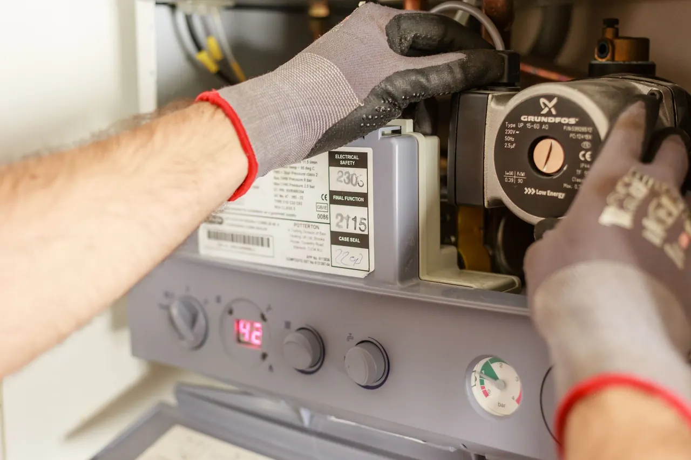
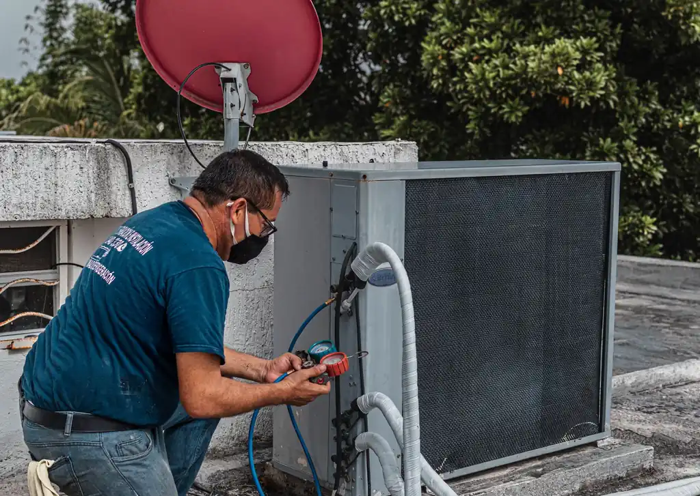
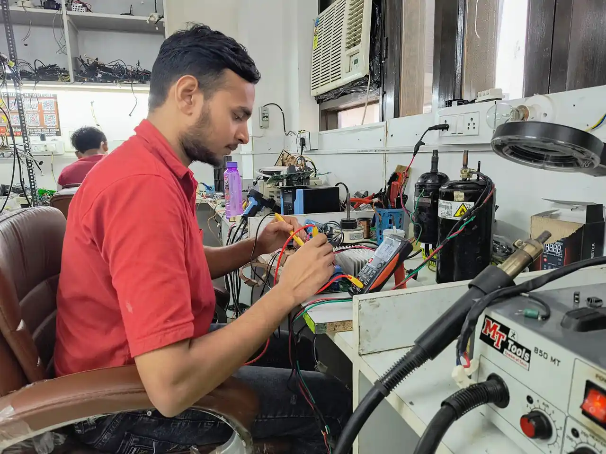
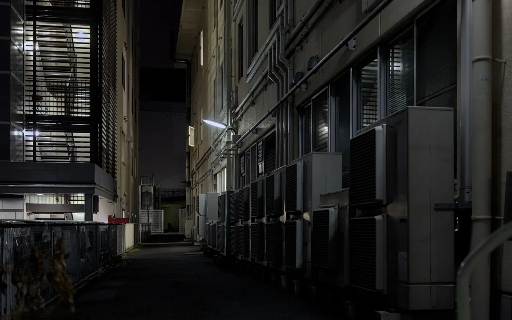
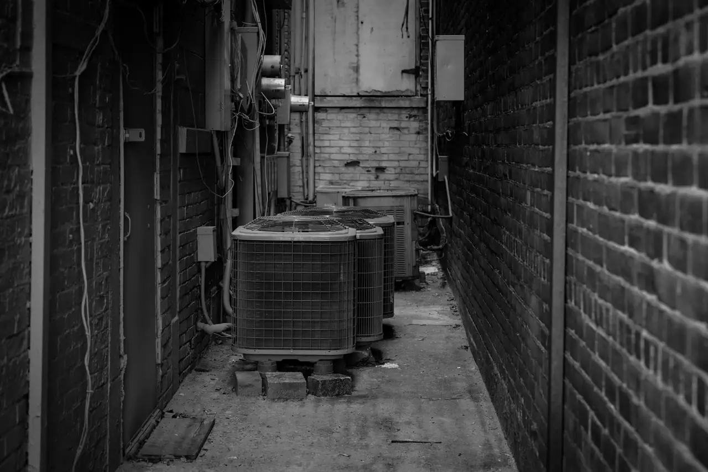

Focused arrival windows
Useful updates and clear arrival timing.

Low refrigerant means weak cooling, and refrigerant does not simply get used up. Our AC refrigerant recharge in Las Vegas finds the cause of the loss, repairs it and recharges your system correctly.
Focused arrival windows
Useful updates and clear arrival timing.
Clear scope before work
Review the approach and price before deciding.
Prepared, clean crews
Equipped vehicles and respectful cleanup.
Local accountability
Neighbors serving neighbors with follow-through.
A proper recharge is more than adding refrigerant. We find out why the charge is low and fix that first.
We measure pressures and system performance to confirm whether the charge is low.
We inspect coils, lines and connections to locate where refrigerant is escaping.
We explain the repair options for the leak we find before any work is done.
After repairs, we recharge the system to the proper level and test performance.
Share what is happening and receive a clear next step from the local team.
AC refrigerant recharge in Las Vegas means restoring the correct amount of refrigerant in your air conditioner after it has dropped too low. Low refrigerant causes weak cooling, long run times and can lead to a frozen evaporator coil.
Refrigerant runs in a sealed system, so a low charge usually means there is a leak. Finding and repairing the leak before recharging helps the fix last instead of leaving you with the same problem next season.

You tell us about weak cooling, ice on the coil or long run times.
We measure pressures and temperatures to confirm whether the charge is low.
We inspect coils, line sets and connections for the source of the loss.
After the repair plan is approved, we repair the leak where possible and recharge the system.
We test the system and review the results with you.

Measure the high and low side pressures of your system.
Help locate where refrigerant is escaping.
Remove air and moisture after a repair that opens the system.
Measure refrigerant accurately when charging.
Check temperature difference across the coil.
Refrigerant is handled according to applicable rules.
We work in a set sequence so the real cause is found.

Low refrigerant is a common cause. We check the charge and find out why it is low.
Ice often points to low refrigerant or airflow problems. We diagnose which one it is.
Long run times with poor cooling can mean a leak. We locate it and repair it.
With long, hot summers in Las Vegas, a system that is low on refrigerant struggles quickly. Our technicians check the charge and the cause before they recharge.
Larger systems run long hours, so low charge shows up quickly.
Older units may develop leaks as they age.
Homeowners often notice weak cooling first during heat waves.
High outdoor temperatures put extra load on the refrigerant system.
Dirty coils make a low charge more noticeable.
The AC ran constantly but the house stayed warm.
A leak was found and repaired, and the system was recharged to the correct level.
Maintenance: Schedule yearly maintenance to catch small leaks early.
The indoor coil and line were covered in ice.
The cause was identified, the charge corrected and the coil thawed and tested.
Maintenance: Change filters on schedule to protect airflow.
Cooling costs rose without a clear reason.
A slow leak was found and repaired, and performance improved.
Maintenance: Have your refrigerant charge checked each season.
Our refrigerant recharge services address several common issues that reduce cooling.
We confirm the charge is low, find the cause and restore the correct level.
We locate leaks in coils, lines and connections and explain the repair options.
Low refrigerant can cause icing. We diagnose the cause and correct it.

Our team focuses on finding the cause of low refrigerant instead of just topping off the system.
Refrigerant is not used up like fuel, so a system that is low on charge usually has a leak. Adding refrigerant without finding the leak is a temporary fix and the problem tends to return. Signs include weak cooling, ice on the coil or lines, hissing sounds, longer run times and higher bills. Correct service includes pressure checks, leak detection, repair where practical and a measured charge. Refrigerant handling follows EPA rules, so it should be done by certified technicians.
It includes checking pressures, locating leaks, explaining repair options, recharging the system to the correct level and testing performance.
No. Refrigerant is sealed in the system and is not used up. If the level is low, there is usually a leak.
Low refrigerant is one possible cause. Others include airflow problems and failed components. A diagnosis identifies the real cause.
Adding refrigerant without addressing the leak usually leads to the same problem returning. We recommend finding and repairing the leak first.
Not seeing your question? Our local team can help you understand urgency, scheduling and what to expect.
Ask the local teamWant to learn more before you call? Read Frozen AC Coil: Causes and What to Do and Why Is My AC Not Cooling in Las Vegas Summer Heat.
We are here to help with your refrigerant recharge needs in Las Vegas. Contact us for an estimate or to schedule service.